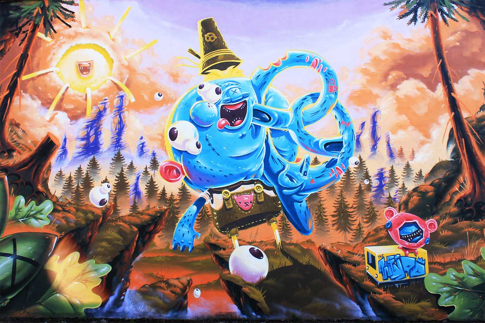

Artist presentation
Herr von Bias
Herr von Bias first contact with art was in the 1990th when he came in touch with the Graffiti scene in Berlin. Since then his style developed from Graffiti Writing more and more into the direction of illustrations and character paintings. Today his artworks can be found all over Berlin, mainly in the streets Friedrichshain and Lichtenberg. Herr von Bias is also part of “The Weird” Art Collective.
Follow HVB on: